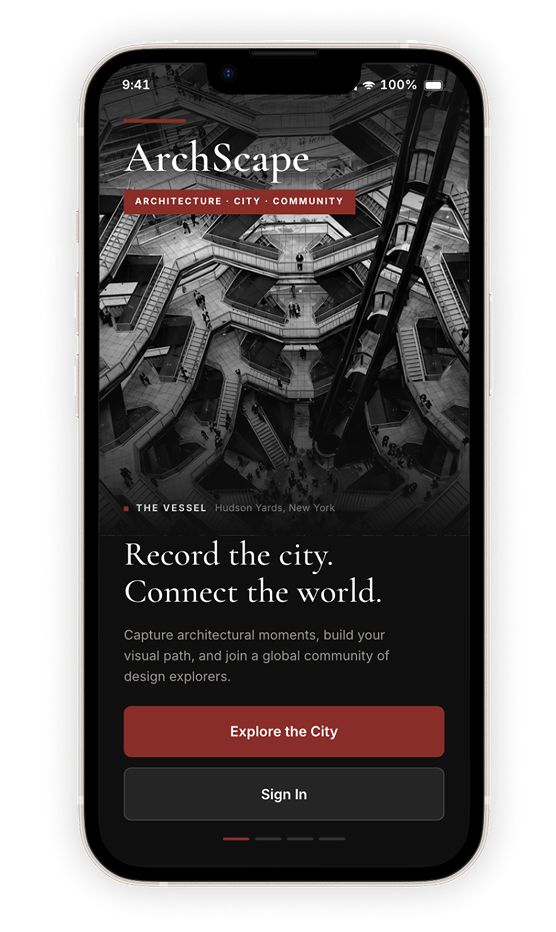
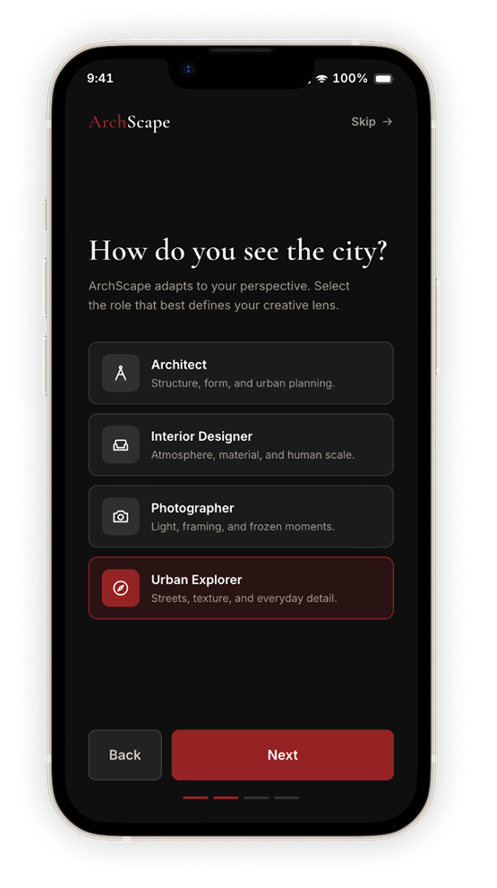
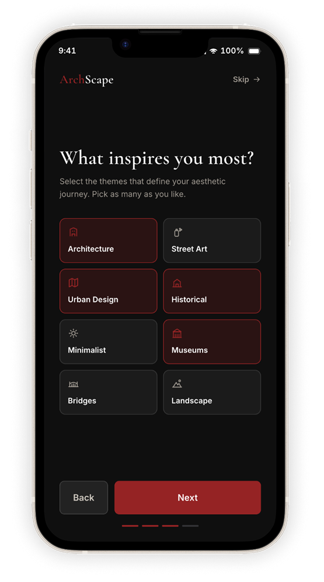
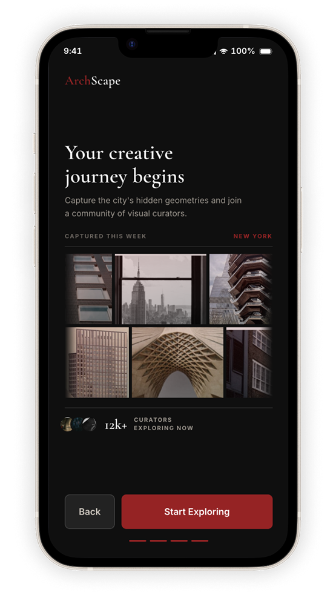

Record the city.
Connect the world.
ArchScape turns architectural curiosity into a personal city archive — helping people discover nearby places, capture what catches their eye, trace the journeys they walk, and meet others whose paths overlap.

See the city
through your own lens.
ArchScape is built around one loop: discover a place, capture it, add it to your journey, and let that journey create new connections. Architecture becomes something you notice while moving through the city — not something you look up later.
Personalized
Onboarding
New users define their creative lens, choose the themes that inspire them, and step into a community of visual explorers.




Explore
Discover nearby architecture, browse by style, and move from a map point into the story behind a building.
Search visually.


Turn movement
into memory.
A journey is one chronological path through the city. Stops show status; the timeline gives the detail.
One walk, in time.
See it.
Frame it.
Capture what catches your eye. ArchScape helps identify the place, surface its story, and turn observation into a record.
From looking
to knowing.
Computer vision supports the moment without taking it over. The user still chooses the frame, title, notes, tags, and whether a capture becomes part of their journey.
Paths become
people.
See where routes overlap, discover people nearby, and turn shared interests into real-world connections.
Profile &
Collection
Captures, journeys, groups, and saved places build into a visual record of how the user sees cities over time.


Visual Language &
Design System
A cohesive visual system for exploring, documenting, and sharing the architecture around us.
Brutalism Collective
Celebrating the raw beauty of concrete and structural honesty.
148 members · 89 posts
SEPBarbican highwalk loop
Saturday 10:00 · 12 going
The Vessel 96% MATCH
A lattice of stairs rising —
the city folded in on itself.